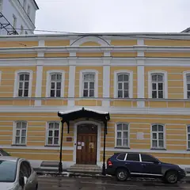

Подборку собрали 20 октября, прошедшие события скрыты. Свежая афиша — на главной
Места по типу · данные на 15 октября
Музеи Москвы: куда сходить
70 мест: музеи, галереи и выставочные залы — например, «Коломенское», «Музей Булгакова» и «Музей космонавтики». 52 места с недорогим входом, примерно до 1 500 ₽. Внизу — 20 выставок, которые идут сейчас или скоро откроются.
- 70 мест
- 75 планов
- 11 округов
Музеи и галереи 40 из 70
пр. Андропова, 39
Холмы над рекой, белая церковь Вознесения и деревянный дворец царя Алексея Михайловича.
Подробнее и маршрут: КоломенскоеПозвать сюда: Коломенское
Фото: Ludvig14, CC BY-SA 4.0 · Wikimedia Commons
Большая Садовая ул., 10
«Нехорошая квартира» №50, где жил Булгаков. Вт–вс, по четвергам до 21:00.
Подробнее и маршрут: Музей БулгаковаПозвать сюда: Музей Булгакова
Фото: Usolt, CC BY 3.0 · Wikimedia Commons
пр. Мира, 111
Под монументом «Покорителям космоса»: настоящие спускаемые аппараты, скафандры и макет станции «Мир».
Подробнее и маршрут: Музей космонавтикиПозвать сюда: Музей космонавтики
Фото: Музей космонавтики, CC0 · Wikimedia Commons
ул. Льва Толстого, 21
Деревянный дом, где Толстой жил зимами, и сад при нём.
Подробнее и маршрут: Усадьба Толстого в ХамовникахПозвать сюда: Усадьба Толстого в Хамовниках
Фото: A.Savin, CC BY-SA 3.0 · Wikimedia Commons
5-й Котельнический пер., 11
Секретный бункер холодной войны на глубине 65 метров у Таганки: экскурсии и ресторан.
Подробнее и маршрут: Бункер-42Позвать сюда: Бункер-42
Фото: Fastboy, CC BY-SA 3.0 · Wikimedia Commons
Старая Басманная ул., 15А, стр. 4
Антикварная галерея в особняке XVIII века на Басманной: джаз у винтажного рояля, кабаре и вечера по мотивам фильмов Дэвида Линча.
Подробнее и маршрут: Галерея «Другое дело»Позвать сюда: Галерея «Другое дело»
Фото: Svetlov Artem, CC BY-SA 4.0 · Wikimedia Commons
ул. Пречистенка, 12/2
Главный пушкинский музей в усадьбе Хрущёвых на Пречистенке.
Подробнее и маршрут: Государственный музей ПушкинаПозвать сюда: Государственный музей Пушкина
Фото: NVO, CC BY-SA 2.5 · Wikimedia Commons
Никитский бул., 7А
Усадьба на Никитском бульваре, где Гоголь сжёг второй том «Мёртвых душ».
Подробнее и маршрут: Дом ГоголяПозвать сюда: Дом Гоголя
Фото: Shakko, CC BY-SA 4.0 · Wikimedia Commons
ул. Павленко, 3
Дача Пастернака в писательском посёлке Переделкино.
Подробнее и маршрут: Дом-музей ПастернакаПозвать сюда: Дом-музей Пастернака
Фото: Артём Белевич, CC BY-SA 4.0 · Wikimedia Commons
ул. Кузнецкий Мост, 12
Больше 40 работающих автоматов из СССР: «Морской бой», «Городки», «Танкодром». Пятнашки — в билете. 11–21.
Подробнее и маршрут: Музей советских игровых автоматовПозвать сюда: Музей советских игровых автоматов
Фото: Hanno Böck, CC0 · Wikimedia Commons
Профсоюзная ул., 123
Скелеты динозавров и древних животных в здании-«крепости» у Тёплого Стана.
Подробнее и маршрут: Палеонтологический музейПозвать сюда: Палеонтологический музей
Фото: MikSed, CC BY-SA 4.0 · Wikimedia Commons
Ильинское ш., Красногорск
«Подмосковный Версаль» Юсуповых: дворец, террасы и регулярный парк. Сразу за МКАД.
Подробнее и маршрут: Усадьба АрхангельскоеПозвать сюда: Усадьба Архангельское
Фото: Ghirlandajo, CC BY-SA 4.0 · Wikimedia Commons
Городок им. Баумана, 2
Царская усадьба на острове: Покровский собор, Мостовая башня и ворота XVII века.
Подробнее и маршрут: Усадьба ИзмайловоПозвать сюда: Усадьба Измайлово
Фото: NVO, CC BY 3.0 · Wikimedia Commons
Андроньевская пл., 10
Белокаменный Спасский собор и Музей Андрея Рублёва с древнерусскими иконами.
Подробнее и маршрут: Андроников монастырьПозвать сюда: Андроников монастырь
Фото: A.Savin, Free Art License · Wikimedia Commons
Кутузовский просп., 38, стр. 1
Круговое полотно Рубо о Бородинском сражении на Кутузовском. Пятница — выходной.
Подробнее и маршрут: Бородинская панорамаПозвать сюда: Бородинская панорама
Фото: Alex 'Florstein' Fedorov, CC BY-SA 4.0 · Wikimedia Commons
ул. Пречистенка, 19
Галерея искусств Зураба Церетели в особняке Долгоруковых: скульптура, живопись и зимний сад.
Подробнее и маршрут: Галерея ЦеретелиПозвать сюда: Галерея Церетели
Фото: Sigwald, CC BY-SA 4.0 · Wikimedia Commons
ул. Знаменка, 5
Портреты и пейзажи Александра Шилова в особняке у Боровицкой.
Подробнее и маршрут: Галерея ШиловаПозвать сюда: Галерея Шилова
Фото: Юрий Д.К., CC BY 4.0 · Wikimedia Commons
ул. Вавилова, 57
Музей эволюции с чучелами животных со всего мира и интерактивными залами.
Подробнее и маршрут: Дарвиновский музейПозвать сюда: Дарвиновский музей
Фото: Cybersky, CC BY-SA 3.0 · Wikimedia Commons
пер. Васнецова, 13
Сказочный терем, который Васнецов построил для себя в 1894 году.
Подробнее и маршрут: Дом-музей ВаснецоваПозвать сюда: Дом-музей Васнецова
Фото: NVO, CC BY-SA 3.0 · Wikimedia Commons
1-я Останкинская ул., 28
Дом конструктора Королёва у ВДНХ — филиал Музея космонавтики.
Подробнее и маршрут: Дом-музей КоролёваПозвать сюда: Дом-музей Королёва
Фото: Vladimir OKC, CC BY-SA 3.0 · Wikimedia Commons
ул. Малая Молчановка, 2
Деревянный домик на Малой Молчановке, где жил юный Лермонтов.
Подробнее и маршрут: Дом-музей ЛермонтоваПозвать сюда: Дом-музей Лермонтова
Фото: Alma Pater, CC BY-SA 3.0 · Wikimedia Commons

Борисоглебский пер., 6 с1
Квартира в Борисоглебском переулке, где Цветаева жила в 1914–1922 годах.
Подробнее и маршрут: Дом-музей ЦветаевойПозвать сюда: Дом-музей Цветаевой
Фото: Catlaster, CC BY-SA 3.0 · Wikimedia Commons
Садовая-Кудринская ул., 6
«Дом-комод» на Садовой-Кудринской, где Чехов жил в 1886–1890 годах.
Подробнее и маршрут: Дом-музей ЧеховаПозвать сюда: Дом-музей Чехова
Фото: Olga North, общественное достояние · Wikimedia Commons
Большая Никитская ул., 6
Старинный музей на Большой Никитской: скелеты, чучела и коллекции насекомых.
Подробнее и маршрут: Зоологический музей МГУПозвать сюда: Зоологический музей МГУ
Фото: A.Savin, Free Art License · Wikimedia Commons
Манежная пл., 1
Выставочный зал у Кремля: большие выставки искусства, истории и дизайна.
Подробнее и маршрут: МанежПозвать сюда: Манеж
Фото: stroi.mos.ru, CC BY 4.0 · Wikimedia Commons
ул. Петровка, 25
Главное здание Московского музея современного искусства в особняке XVIII века.
Подробнее и маршрут: ММОМА на ПетровкеПозвать сюда: ММОМА на Петровке
Фото: Inna vorobyova, CC BY-SA 4.0 · Wikimedia Commons
ул. Крымский Вал, 9, стр. 32
Главный музей современного искусства — прямо в Парке Горького, с книжным и кафе.
Подробнее и маршрут: Музей «Гараж»Позвать сюда: Музей «Гараж»
Фото: Garage Museum of Contemporary Art, CC BY-SA 4.0 · Wikimedia Commons
Армянский пер., 3
Музей городского освещения в палатах XVII века у Чистых прудов.
Подробнее и маршрут: Музей «Огни Москвы»Позвать сюда: Музей «Огни Москвы»
Фото: Николай Аввакумов, CC BY 3.0 · Wikimedia Commons
просп. Мира, 119 с84А
Музей мультфильмов на ВДНХ: куклы, декорации и мастер-классы по анимации.
Подробнее и маршрут: Музей анимацииПозвать сюда: Музей анимации
Фото: Dsg-Dsg, CC BY-SA 3.0 · Wikimedia Commons
ул. Советской Армии, 2
Большой военный музей: ордена, знамёна и техника под открытым небом во дворе.
Подробнее и маршрут: Музей Вооружённых силПозвать сюда: Музей Вооружённых сил
Фото: A.Savin, CC BY-SA 3.0 · Wikimedia Commons
Никитский бул., 12А
Искусство Китая, Японии, Индии и Средней Азии в усадьбе Луниных на Никитском бульваре.
Подробнее и маршрут: Музей ВостокаПозвать сюда: Музей Востока
Фото: Panther, CC BY-SA 3.0 · Wikimedia Commons
Нижний Таганский туп., 3
Музей Владимира Высоцкого на Таганке, рядом с его театром.
Подробнее и маршрут: Музей ВысоцкогоПозвать сюда: Музей Высоцкого
Фото: Vladimir OKC, CC BY-SA 3.0 · Wikimedia Commons
Делегатская ул., 3
Фарфор, хохлома, гжель и палех в усадьбе на Делегатской улице.
Подробнее и маршрут: Музей декоративного искусстваПозвать сюда: Музей декоративного искусства
Фото: NVO, CC BY 3.0 · Wikimedia Commons
Ботаническая ул., 25, стр. 4
Интерактивный музей шифров и связи: можно самим взламывать коды. Вт–вс 11–20.
Подробнее и маршрут: Музей криптографииПозвать сюда: Музей криптографии
Фото: Leokand, CC0 · Wikimedia Commons
Зубовский бул., 2
История города в Провиантских складах, во дворе — кафе и выставки.
Подробнее и маршрут: Музей МосквыПозвать сюда: Музей Москвы
Фото: shakko, CC BY-SA 3.0 · Wikimedia Commons
Кожевническая ул., 2
Музей у Павелецкого вокзала: траурный поезд Ленина и паровозы.
Подробнее и маршрут: Музей Московской железной дорогиПозвать сюда: Музей Московской железной дороги
Фото: Harveyqs, CC BY-SA 3.0 · Wikimedia Commons
пл. Победы, 3
Большой музей Великой Отечественной войны на Поклонной горе.
Подробнее и маршрут: Музей ПобедыПозвать сюда: Музей Победы
Фото: Jrissman, CC BY 3.0 · Wikimedia Commons
Ленинградский пр., 15, стр. 11
Частный музей в бывшей кондитерской фабрике «Большевик»: Коровин, Серов, Кустодиев и сильные временные выставки.
Подробнее и маршрут: Музей русского импрессионизмаПозвать сюда: Музей русского импрессионизма
Фото: Sergey A. Demidov, CC BY 4.0 · Wikimedia Commons
Новорязанская ул., 27
Новый музей в отреставрированном гараже Мельникова: автобусы, трамваи и такси разных лет. Вт–вс.
Подробнее и маршрут: Музей транспорта МосквыПозвать сюда: Музей транспорта Москвы
Фото: Metrostroy2033, CC BY-SA 4.0 · Wikimedia Commons
ул. Достоевского, 2
Квартира, где прошло детство Достоевского, во флигеле Мариинской больницы.
Подробнее и маршрут: Музей-квартира ДостоевскогоПозвать сюда: Музей-квартира Достоевского
Фото: Lesio, CC BY-SA 3.0 · Wikimedia Commons


Готовые планы с этими местами 12 из 75
- Дом-музей Пастернака · Музей · м. Боровское шоссе
- 10 минут пешкомДом творчества Переделкино · Литературный центр
- 1 минута пешкомБиблиотека · Ресторан
Дача Пастернака, прогулка среди сосен писательского городка и обед в «Библиотеке» с камином и книжными полками — почти загородный день, не уезжая из Москвы.
Открыть план: День в ПеределкинеПозвать сюда: День в Переделкине
Фото: Артём Белевич, CC BY-SA 4.0 · Wikimedia Commons
- Музей-квартира Достоевского · Музей · м. Достоевская
- 12 минут пешкомФудхолл «Дружба» · Фудхолл
Квартира, где прошло детство Достоевского, а через десять минут — фудхолл «Дружба»: рамен, утка по-пекински или малатан, порции большие, цены спокойные.
Открыть план: Достоевский и фудхолл «Дружба»Позвать сюда: Достоевский и фудхолл «Дружба»
Фото: Lesio, CC BY-SA 3.0 · Wikimedia Commons
- Музей русского импрессионизма · Музей · м. Белорусская
- 1 минута пешкомБольшевик Лофт · Ресторан со стендапом
Коровин, Серов и Кустодиев в Музее русского импрессионизма, а в соседнем краснокирпичном корпусе бывшей фабрики «Большевик» — ужин и стендап в Большевик Лофт.
Открыть план: Импрессионисты и стендап на фабрикеПозвать сюда: Импрессионисты и стендап на фабрике
Фото: Sergey A. Demidov, CC BY 4.0 · Wikimedia Commons
- Андроников монастырь · Музей и монастырь · м. Площадь Ильича
- 6 минут пешкомСекрет · Приватный кинотеатр
Прогулка вокруг белых стен Андроникова монастыря, а потом приватный кинотеатр «Секрет»: свой зал с большим диваном, любой фильм и работа до шести утра.
Открыть план: Монастырь и кинозал только для васПозвать сюда: Монастырь и кинозал только для вас
Фото: A.Savin, Free Art License · Wikimedia Commons
- Музей космонавтики · Музей · м. ВДНХ
- 9 минут пешкомМоскино Космос · Кинотеатр
Спускаемые аппараты и скафандры под монументом «Покорителям космоса», а потом сеанс в кинотеатре «Космос» 1964 года — на огромном экране или в крошечном зале с пуфами. Билеты недорогие.
Открыть план: Музей космонавтики и кино в «Космосе»Позвать сюда: Музей космонавтики и кино в «Космосе»
Фото: Музей космонавтики, CC0 · Wikimedia Commons
- Усадьба Измайлово · Музей-усадьба · м. Партизанская
- 12 минут пешкомImmerscape · Квест с актёрами
Прогулка по острову усадьбы Измайлово мимо Покровского собора, а потом «Запретная дверь» в Immerscape: актрисы играют с порога и выручают, если совсем страшно.
Открыть план: Царский остров и «Запретная дверь»Позвать сюда: Царский остров и «Запретная дверь»
Фото: NVO, CC BY 3.0 · Wikimedia Commons
- Дом-музей Лермонтова · Музей · м. Арбатская
- 4 минуты пешкомThe Nappe Bistro · Бистро
Домик Лермонтова на Молчановке и бистро в старинном Скатертном переулке.
Открыть план: Арбатские переулкиПозвать сюда: Арбатские переулки
Фото: Alma Pater, CC BY-SA 3.0 · Wikimedia Commons
- Останкинская башня · Смотровая площадка · м. Бутырская
- 21 минута пешкомДом-музей Королёва · Музей
- 9 минут пешкомМузей космонавтики · Музей
Город с 337 метров со стеклянным полом (возьмите паспорт), потом минут двадцать прогулкой до дома, где жил конструктор Сергей Королёв, а оттуда меньше десяти минут до Музея космонавтики с настоящими спускаемыми аппаратами.
Открыть план: Башня и космосПозвать сюда: Башня и космос
Фото: Klodklodklod77, CC BY-SA 4.0 · Wikimedia Commons
- Бородинская панорама · Музей · м. Парк Победы
- 2 минуты пешкомAtlantica Seafood · Рыбный ресторан
Сначала круговое полотно Рубо о Бородинском сражении, а потом устрицы и рыба в Atlantica в двух минутах пешком. Учтите: по пятницам панорама закрыта.
Открыть план: Бородино и морепродуктыПозвать сюда: Бородино и морепродукты
Фото: Alex 'Florstein' Fedorov, CC BY-SA 4.0 · Wikimedia Commons
- Музей Булгакова · Музей · м. Маяковская
- 8 минут пешкомPinch · Ресторан
Сначала «Нехорошая квартира» в Музее Булгакова, а потом восемь минут пешком до Pinch у Патриарших: завтраки там подают до 16:00, так что бранч получится в самый раз.
Открыть план: Булгаков и поздний бранчПозвать сюда: Булгаков и поздний бранч
Фото: Usolt, CC BY 3.0 · Wikimedia Commons
- Музей Булгакова · Музей · м. Маяковская
- 8 минут пешкомЗойка · Ресторан
«Нехорошая квартира» №50 в музее Булгакова (по четвергам открыт до 21:00), а потом ужин в «Зойкиной квартире» на Патриарших, где остановилось время.
Открыть план: Булгаковский вечерПозвать сюда: Булгаковский вечер
Фото: Usolt, CC BY 3.0 · Wikimedia Commons
- Бункер-42 · Музей и ресторан под землёй · м. Таганская
- 9 минут пешкомRestaurant by Deep Fried Friends · Ресторан-бар
Экскурсия в секретный бункер холодной войны на глубине 65 метров, а потом бистро и коктейльный паб в Deep Fried Friends в девяти минутах пешком.
Открыть план: Бункер холодной войныПозвать сюда: Бункер холодной войны
Фото: Fastboy, CC BY-SA 3.0 · Wikimedia Commons

Выставки сейчас 12 из 20
ГМИИ им. А. С. Пушкина, Главное здание · м. Кропоткинская
Большой проект о буддийском искусстве России — спокойный и созерцательный. Последние дни: выставка закрывается 1 ноября, в понедельник музей не работает.
Подробнее: Алмазная колесница. Буддийское искусство РоссииПозвать сюда: Алмазная колесница. Буддийское искусство РоссииБилеты : Алмазная колесница. Буддийское искусство России (страница с билетами, откроется в новой вкладке)
Фото: Ghirlandajo, CC BY-SA 3.0 · Wikimedia Commons
Музей «Гараж», −1 этаж · м. Октябрьская · бесплатно · 12+
Инсталляция-диалог: две лампы общаются вспышками и звуком, а розовая зеркальная комната множит тебя до бесконечности. Вход бесплатный, фото выходят эффектные.
Подробнее: Вадим Фишкин «Словарь воображаемых мест»Позвать сюда: Вадим Фишкин «Словарь воображаемых мест»Билеты : Вадим Фишкин «Словарь воображаемых мест» (страница с билетами, откроется в новой вкладке)
Фото: Garage Museum of Contemporary Art, CC BY-SA 4.0 · Wikimedia Commons
Музей «Гараж», мезонин · м. Октябрьская · бесплатно · 12+
Можно поиграть в искусство: две 8-битные игры-инсталляции индийской художницы по мотивам советских детских книг. Бесплатно, а рядом Парк Горького.
Подробнее: Видеоигры Афры ШафикПозвать сюда: Видеоигры Афры ШафикБилеты : Видеоигры Афры Шафик (страница с билетами, откроется в новой вкладке)
Фото: Garage Museum of Contemporary Art, CC BY-SA 4.0 · Wikimedia Commons
Третьяковка на Кадашёвской · м. Третьяковская · от 450 ₽ · 12+
Больше 140 работ символиста Борисова-Мусатова из двадцати собраний, часть показывают впервые. Мечтательная и очень романтичная живопись.
Подробнее: Виктор Борисов-Мусатов. Гармония образаПозвать сюда: Виктор Борисов-Мусатов. Гармония образаБилеты : Виктор Борисов-Мусатов. Гармония образа (страница с билетами, откроется в новой вкладке)
Фото: Ludvig14, CC BY-SA 4.0 · Wikimedia Commons
ГМИИ им. А. С. Пушкина, Галерея искусства стран Европы и Америки, зал 16 · м. Кропоткинская
Камерная выставка о французском коллекционере Гюставе Файе, поклоннике Гогена, и его связях с русскими собирателями. Один зал — на час; по понедельникам закрыто.
Подробнее: Гюстав Файе и русские коллекционерыПозвать сюда: Гюстав Файе и русские коллекционерыБилеты : Гюстав Файе и русские коллекционеры (страница с билетами, откроется в новой вкладке)
Фото: Ghirlandajo, CC BY-SA 3.0 · Wikimedia Commons
Музей «Гараж», открытое хранение · м. Октябрьская · 12+
Позднесоветские «долгие 80-е»: искусство вместе с телевизором, кино и рок-клубами той поры. Ностальгия для компании; учти, что в залах бывает мигающий свет.
Подробнее: Искусство на частоте 1980-хПозвать сюда: Искусство на частоте 1980-хБилеты : Искусство на частоте 1980-х (страница с билетами, откроется в новой вкладке)
Фото: Garage Museum of Contemporary Art, CC BY-SA 4.0 · Wikimedia Commons
ВДНХ, павильон № 1 «Центральный» · м. ВДНХ · 0+
Около 200 работ о том, как театр и живопись говорят одним языком: Репин, Брюллов, Суриков, Кустодиев и сценические костюмы. Центральный павильон ВДНХ.
Подробнее: Искусство сцены. Академическая живописьПозвать сюда: Искусство сцены. Академическая живописьБилеты : Искусство сцены. Академическая живопись (страница с билетами, откроется в новой вкладке)
Фото: Alexxx1979, CC BY-SA 4.0 · Wikimedia Commons
ГМИИ им. А. С. Пушкина, Галерея искусства стран Европы и Америки · м. Кропоткинская
Кубинские киноафиши и плакаты 1950–70-х — больше 140 листов дерзкой графики. Зайдёт и тем, кто к музеям обычно равнодушен. По понедельникам закрыто.
Подробнее: Кубинский плакат. 1950–1970-е. Кино и революцияПозвать сюда: Кубинский плакат. 1950–1970-е. Кино и революцияБилеты : Кубинский плакат. 1950–1970-е. Кино и революция (страница с билетами, откроется в новой вкладке)
Фото: Ghirlandajo, CC BY-SA 3.0 · Wikimedia Commons
Медиацентр парка «Зарядье» · м. Китай-город · 12+
Выставка памяти одного из первых цифровых художников России: стереопанели, видеоарт и реконструкция мастерской. Логично совместить с прогулкой по Зарядью.
Подробнее: Мастерская новатора. Константин ХудяковПозвать сюда: Мастерская новатора. Константин ХудяковБилеты : Мастерская новатора. Константин Худяков (страница с билетами, откроется в новой вкладке)
Фото: Alina Vozna, CC BY-SA 4.0 · Wikimedia Commons
ГЭС-2, галереи С2–С5 · м. Кропоткинская · 12+
Натюрморт, портрет и пейзаж глазами современных художников — сотня работ, десятки авторов. Бесплатный вход — каждую первую среду месяца.
Подробнее: Натюрморт. Портрет. Пейзаж. После жанраПозвать сюда: Натюрморт. Портрет. Пейзаж. После жанраБилеты : Натюрморт. Портрет. Пейзаж. После жанра (страница с билетами, откроется в новой вкладке)
Фото: Юрий Д.К., CC BY 4.0 · Wikimedia Commons
Музей Востока на ВДНХ (павильон № 13) · м. ВДНХ · 0+
Около 250 работ Рериха — от древнерусских мотивов до гималайской серии — плюс тибетские танки и буддийская бронза. Большая выставка в павильоне ВДНХ.
Подробнее: Николай Рерих. Ковчег будущегоПозвать сюда: Николай Рерих. Ковчег будущегоБилеты : Николай Рерих. Ковчег будущего (страница с билетами, откроется в новой вкладке)
Фото: Alexxx1979, CC BY-SA 4.0 · Wikimedia Commons
ЦСИ AZ/ART · м. Китай-город · 0+
Скульптура оттепели в 43 работах: Эрнст Неизвестный, группа ЛЕСС и их современники — и бунтари, и официальные мастера. Небольшая выставка на Маросейке.
Подробнее: Они были разными. Скульптура оттепелиПозвать сюда: Они были разными. Скульптура оттепелиБилеты : Они были разными. Скульптура оттепели (страница с билетами, откроется в новой вкладке)


Как позвать
- Выбери план, место или событие — в карточке адрес, цены и маршрут в Яндекс Картах.
- Нажми «Позвать сюда» — соберётся приглашение-игра для свидания или голосование для компании.
- Отправь ссылку в любой мессенджер: тебе ответят, а компания отметит, куда и когда может. Бесплатно и без регистрации.